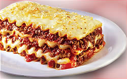

Recipe´s

Uno clássico italiano!
Não precisa ser ou falar italiano para saber que essa receita é uma maravilha! Rende muito e faz todo mundo sair super satisfeito da mesa! Capriche nos molhos e se quiser, essa aqui é feita da forma tradicional para arrasar nos elogios!
Ingredientes
- 500 gr de massa de lasanha
- 300 gr de carne moída
- 1 colher (sobremesa) de óleo de girassol
- 1 unidade de cebola picada
- 2 dentes de alho
- 1 pitada de sal
- 2 envelopes de molho de tomate
- 250 gr de presunto magro
- 250 gr de mussarela
- 1 pacote de queijo ralado
Como Fazer:
- Cozinhe massa al dente, após cozido passe um pouco de óleo para que não grude (reserve). Existem massas que não precisam de cozimento.
- Para o molho, refogue o alho, a cebola, a carne moída, depois acrescente o molho de tomate, deixe cozinhar por 5 minutos, reserve.
- Em uma forma coloque no fundo um pouco de molho, uma camada de massa, uma camada de presunto, uma camada de mussarela e repita a sequência até que os ingredientes acabem.
- Cubra com queijo ralado e leve ao forno por 30 minutos à 180º C ou até dourar bem.